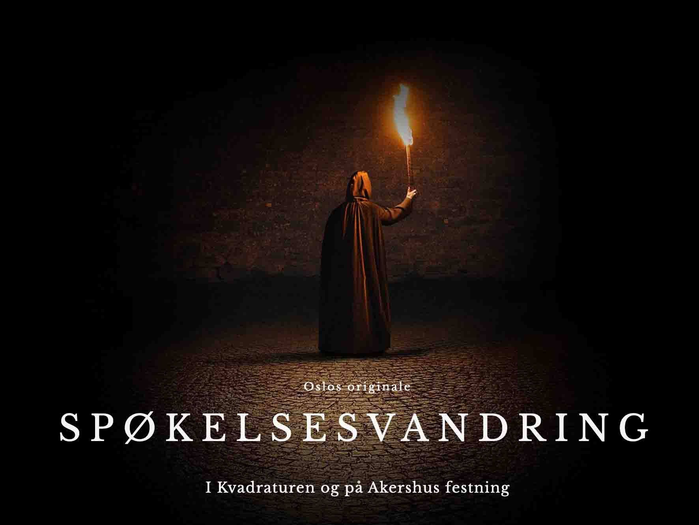

Culture Night
Culture night is the city's great hail to the cultural scene, a get together to highlight artist and institutions and put them on the map.

Ghost Walk
The original ghostwalk, join the spooky tour around Akershus fortress.
Halloween at Tusenfryd Halloween is the time to scare and be scared. Experience a blood-curdling adventure at Tusenfryd this october.
Norsk Folkemuseum
Have a stroll around the beautiful Norsk Folkemuseum and experience the traditional Norwegian craft and get a feel of how it was to live in Norway in the "olden days".
Botanical garden
The botanical garden has a living collection of 5,500 plants from around the world. A beautifull place to capture the autumnal foliage and the exotic plants at the greenhouse.
Vigeland Park
The renowned artist Gustac Vigelands life work is displayed at the Vigelandpark located in Frogner, here you can find a collection of sculptures that Vigeland made in 40 years.